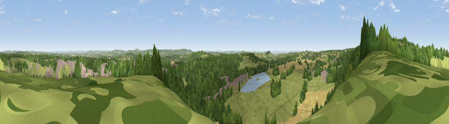

Viewpoint near East Cranmore
#5932 in England · top 7% of its area beats it · near East CranmoreThe view, rendered

A 360° render of this exact spot computed from the terrain model, tree cover and land cover — summer colours, afternoon light, calibrated against photographs of famous viewpoints. Real trees, hedges and buildings will differ in detail.
The panorama
Grey silhouette: terrain skyline in each direction (720 bearings, Earth curvature and refraction included). Dashed green: skyline with trees (+15 m) and buildings (+8 m) as obstacles. Blue strip: how far the ground is visible on each bearing.
Where the view opens
Wedge length = distance to the farthest visible ground on that bearing (vegetation-aware). Rings at 10, 25 and 50 km.
What fills the view
33% woodland · 31% grassland · 18% cropland · 10% built-up · 6% bare ground ·
Angular shares of the visible panorama (visual magnitude), not map area. Landscape diversity 0.65 (0–1 Shannon).
Key numbers
More beautiful places nearby
The staircase of upgrades: each row has a higher view potential than everything closer. Driving times are estimates from straight-line distance, calibrated against real road routing — check an actual route before setting out.
| Place | Direction | Drive | Score |
|---|---|---|---|
| Viewpoint near Oakhill | WNW · 5 km | ~11 min | 71.3 |
| Viewpoint near Milton Clevedon | SSW · 8 km | ~16 min | 73.9 |
| Lamyatt Beacon | SSW · 8 km | ~16 min | 74.6 |
| Viewpoint near Lamyatt | SSW · 8 km | ~17 min | 77.8 |
| Beacon Batch | WNW · 24 km | ~40 min | 79.4 |
| Bleadon Hill [Loxton Hill] | WNW · 35 km | ~53 min | 79.6 |
| Lewesdon Hill | SSW · 50 km | ~71 min | 83.3 |
| Viewpoint near West Bagborough | WSW · 52 km | ~74 min | 84.3 |
51.19505, -2.44430 · source: screening · position refined by local search. Computed location — check access rights before visiting.